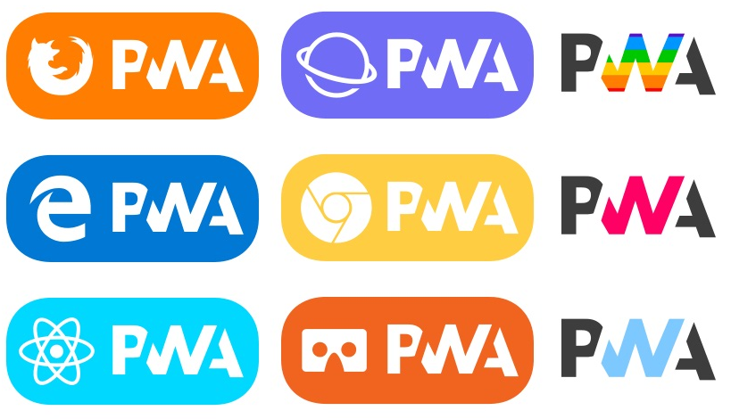

Une Progressive Web App dans la tablette des enquêteurs Prix
par Adrien Montbroussous, sous la direction de Aude Mulliez

Merci de votre attention
https://github.com/Dridri02
adrien.montbroussous@insee.fr